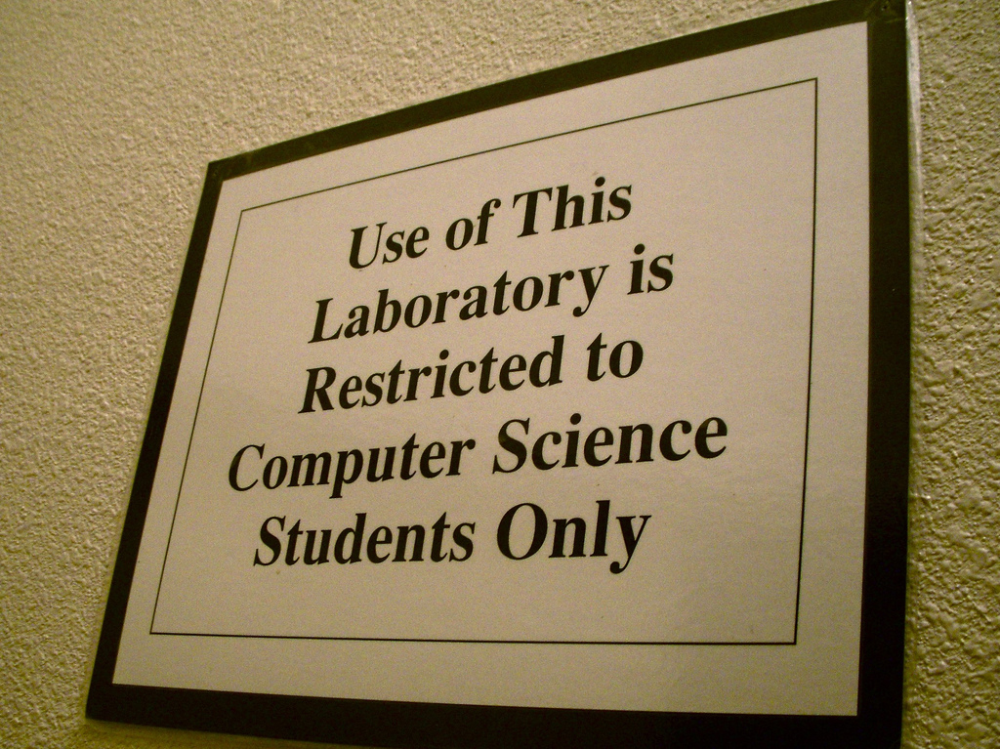
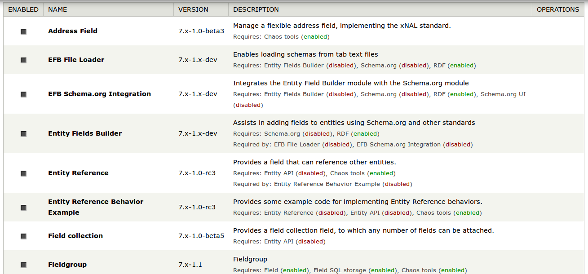

http://mrf.github.io/keeping-os-open
About Me:
Mark Ferree
@mrf

How do we turn:
I love computers!
Into:
I bend computers to my will!
Barriers to working on open source
- Knowing a programming language well
- Using source control
- How to set up a dev environment
- Issue tracking software
- Patch management
- Written English
- Negotiation skills
Start Reading
https://www.flickr.com/photos/cdevers/5702488800
Go Back to School

https://www.flickr.com/photos/jdhancock/3371243601
Get a Job
https://www.flickr.com/photos/sarahbelle1/3442747012
I just want to make a website...
- Off the shelf look and feel OK?
- Can you follow tutorials online?
- Love clicking checkboxes?
You're already a site builder
Site Builders:
- Use functionality built by others
- Don't have too many custom requirements
- Don't necessarily know any code
- Love clicking checkboxes

Site builders are encouraged to contribute by:
Testing and QA'ing new functionality and bug fixes
But I really don't like how my site looks
- Learn some HTML
- Learn some CSS
- Learn Drupal's theme layer
- Learn a bit of PHP for the theme layer
Themers:
- Stay in the presentation layer
- Don't have too many custom requirements
Themers are encouraged to contribute by:
Testing and QA'ing new functionality and bug fixes
Contributing code to front end issues
Now I need something custom
- Learn some more PHP
- Learn Drupal's APIs and Hook System
- Learn Git
- Learn how to create and apply patches
Now you're a module developer
Module developers are encouraged to contribute by:
Testing and QA'ing new functionality and bug fixes
Fixing issues in existing modules
Drupal itself really doesn't meet my needs
- Learn a lot more PHP
- Learn most of Drupals APIs and Hooks
- Learn negotiation in module issue queues
Now you're a core developer
- Know a programming language ✔
- Using source control ✔
- How to set up a dev environment ✔
- Issue tracking software ✔
- Patch management ✔
- Written English ✔
- Negotiation skills ✔
Everyone goes as many layers deep as they are comfortable with
Some start out with many or all of these skills
How does the Drupal community help encourage the progression to happen?
Meetups
Camps
Conferences
Books
Video Tutorials
Trainings
Not all rainbows and unicorns
https://www.flickr.com/photos/rachelrusinski/2699175117
Object Oriented
Configuration Management System
Symfony
Doctrine
Guzzle
Twig
PHPUnit
9090 Modules To Be Ported
https://www.flickr.com/photos/nanagyei/6744708487
All contributions are important
Users need to be engaged as well as developers
Those with the skills != those with the time to contribute